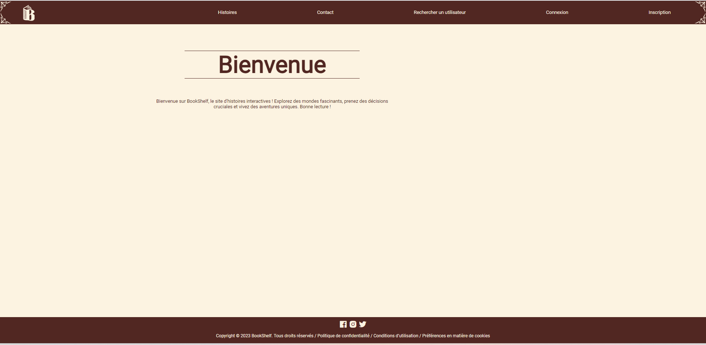
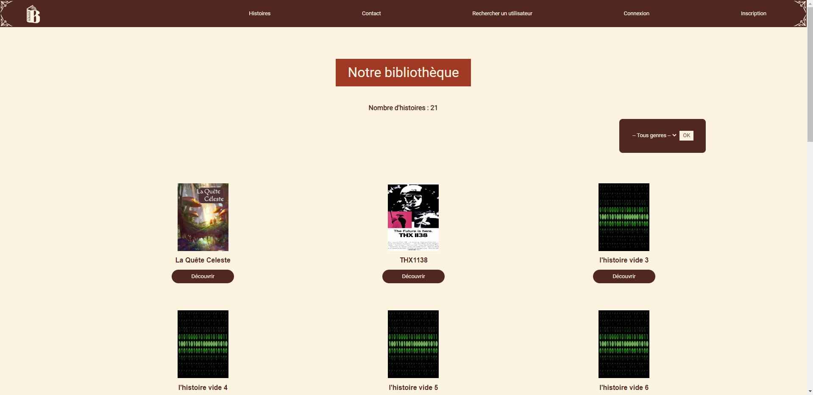
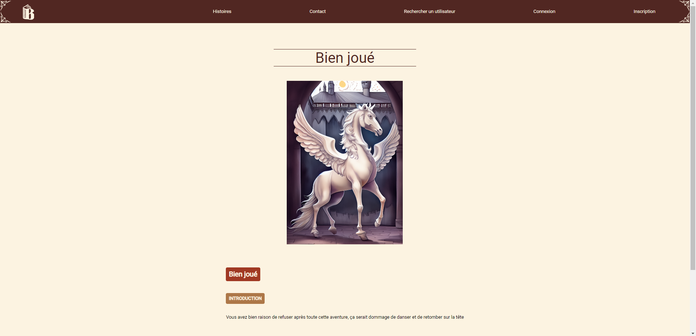

Bookshelf
Bookshelf est un projet qui a eu lieu lors du marathon du web de
l'année 2023.
Le but de ce marathon était de faire un site web en 48 heures. Nous
étions dans des équipes de 9,
composées de 4 personnes du département informatique mais aussi de 5
personnes du département multimédia.
Ce fut une expérience très enrichissante car j'ai pu rencontrer de
nouvelles personnes. Toutefois, nous avons également eu la possibilité
de partager
nos connaissances et de communiquer au sein d'une
équipe. Voici quelques pages de notre site :
Page d'acceuil

L'image de la liste de toutes les histoires

L'image d'un chapitre
